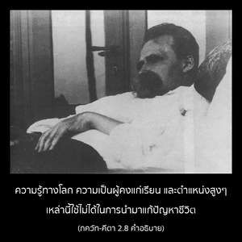

ข้าพเจ้าไม่สามารถหาวิธีขจัดความทุกข์ที่ทำให้ประสาทสัมผัสเหือดแห้งลงได้ ถึงแม้จะได้รับชัยชนะทั้งทรัพย์สมบัติ และอาณาจักรที่ไร้คู่แข่งบนโลกนี้ พร้อมทั้งอำนาจสูงสุดเยี่ยงเทวดาบนสวรรค์ ก็ยังจะไม่สามารถขจัดปัดเป่ามันออกไปได้


ถึงแม้ว่า อรฺชุน ทรงยกข้ออ้างมากมายตามหลักความรู้ทางศาสนาและหลักศีลธรรม แต่ดูเหมือนว่าพระองค์ไม่สามารถแก้ปัญหาที่แท้จริงได้หากไม่ได้รับการช่วยเหลือจากพระอาจารย์ทิพย์องค์ศฺรีกฺฤษฺณ อรฺชุน ทรงสามารถเข้าใจว่าสิ่งที่สมมุติว่าเป็นความรู้ที่มีอยู่นั้นใช้ไม่ได้ในการที่จะขจัดปัญหาที่ทำให้พระวรกายของพระองค์แห้งผากลง และเป็นไปไม่ได้ที่ อรฺชุน จะทรงสามารถแก้ปัญหาความสับสนวุ่นวายนี้ได้โดยไม่ได้รับความช่วยเหลือจากพระอาจารย์ทิพย์อย่างองค์กฺฤษฺณ ความรู้ทางโลก ความเป็นผู้คงแก่เรียน และตำแหน่งสูงๆเหล่านี้ใช้ไม่ได้ในการนำมาแก้ปัญหาชีวิต พระอาจารย์ทิพย์อย่างองค์กฺฤษฺณเท่านั้นที่ทรงสามารถให้ความช่วยเหลือเราได้ ฉะนั้น ข้อสรุปคือ พระอาจารย์ทิพย์ผู้มีกฺฤษฺณจิตสำนึกร้อยเปอร์เซ็นต์เป็นพระอาจารย์ทิพย์ที่เชื่อถือได้ เพราะท่านสามารถแก้ปัญหาชีวิตได้ องค์ ไจตนฺย ตรัสว่าผู้ที่มีความรู้จริงในศาสตร์แห่งกฺฤษฺณจิตสำนึกจึงจะเป็นพระอาจารย์ทิพย์ที่แท้จริงได้ ไม่ว่าสถานภาพทางสังคมของท่านจะเป็นเช่นไรก็ตาม
กิพา วิประ, กิพา นยาสี, ศูทระ เกเน นะยะ
เยอิ กฤษณะ-ตัตตวะ-เวตตา, เสอิ ‘คุรุ’ หะยะ
“มันไม่สำคัญว่าบุคคลนั้นจะเป็น วิปฺร (ผู้มีความรู้มากในปรัชญาพระเวท) ผู้เกิดในตระกูลต่ำ หรือเป็นผู้ใช้ชีวิตสละโลกวัตถุ หากผู้ใดมีความรู้จริงในศาสตร์แห่งกฺฤษฺณจิตสำนึก ผู้นั้นมีความสมบูรณ์ และเป็นพระอาจารย์ทิพย์ที่เชื่อถือได้” (ไจตนฺย-จริตามฺฤต, มธฺย 8.128) ดังนั้น หากไม่มีความรู้จริงในศาสตร์แห่งกฺฤษฺณจิตสำนึกก็ไม่มีผู้ใดสามารถเป็นพระอาจารย์ทิพย์ที่เชื่อถือได้ ได้กล่าวไว้ในวรรณกรรมพระเวทอีกเช่นกันว่า
ษฏฺ-กรฺม-นิปุโณ วิโปฺร
มนฺตฺร-ตนฺตฺร-วิศารทห์
อไวษฺณโว คุรุรฺ น สฺยาทฺ
ไวษฺณวห์ ศฺว-ปโจ คุรุห์
“พฺราหฺมณ ผู้คงแก่เรียนมีความชำนาญในสาขาวิชาของพระเวททั้งหมดยังไม่เหมาะสมที่จะมาเป็นพระอาจารย์ทิพย์ หากมิได้เป็นไวษฺณว หรือผู้มีความชำนาญในศาสตร์แห่งกฺฤษฺณจิตสำนึก แต่ผู้ที่เกิดในตระกูลต่ำสามารถเป็นพระอาจารย์ทิพย์ที่เชื่อถือได้ หากว่าผู้นั้นเป็น ไวษฺณว หรือมีกฺฤษฺณจิตสำนึก” (ปทฺม ปุราณ)
ปัญหาชีวิตทางวัตถุ เช่น การเกิด การแก่ การเจ็บ และการตายแก้ไขไม่ได้ด้วยการสะสมทรัพย์สมบัติ และการพัฒนาเศรษฐกิจ มีสถานที่ต่าง ๆ มากมายในโลกที่รัฐมีสิ่งอำนวยความสะดวกแด่ชีวิตอย่างสมบูรณ์ เต็มไปด้วยความมั่งคั่งและเศรษฐกิจที่ดี แต่ปัญหาทางวัตถุก็ยังปรากฏให้เห็นอยู่ พวกเขาเสาะแสวงหาสันติภาพด้วยวิธีต่างๆ แต่จะได้รับความสุขอย่างแท้จริงก็ด้วยการมาปรึกษากับองค์กฺฤษฺณหรือ ภควัท-คีตา และ ศฺรีมทฺ-ภาควตมฺ เท่านั้น ซึ่งประกอบกันเป็นศาสตร์แห่งองค์กฺฤษฺณ โดยผ่านทางผู้แทนที่เชื่อถือได้ขององค์กฺฤษฺณ หรือบุคคลผู้อยู่ในกฺฤษฺณจิตสำนึก
หากการพัฒนาเศรษฐกิจและความสะดวกสบายทางวัตถุจะสามารถขจัดความเศร้าโศกเสียใจของเราจากความมึนเมาทางครอบครัว สังคม ชาติ และระดับนานาชาติได้ อรฺชุน คงไม่ตรัสว่า แม้แต่ราชอาณาจักรในโลกที่ไร้ศัตรูคู่แข่ง หรืออำนาจสูงสุดเยี่ยงเหล่าเทวดาบนสรวงสวรรค์ยังไม่สามารถขจัดความเศร้าโศกของพระองค์ได้ ฉะนั้น อรฺชุน จึงทรงแสวงหาที่พึ่งในกฺฤษฺณจิตสำนึก และนี่คือวิถีทางที่ถูกต้องเพื่อสันติภาพและความสามัคคี การพัฒนาเศรษฐกิจ หรืออำนาจความยิ่งใหญ่ในโลกอาจจบสิ้นลงในวินาทีใดก็ได้จากภัยพิบัติแห่งธรรมชาติวัตถุ แม้วิวัฒนาการที่จะไปอยู่ในดาวเคราะห์ที่สูงกว่า ที่มนุษย์พยายามที่จะขึ้นไปบนดวงจันทร์อาจจบสิ้นลงในวินาทีใดก็ได้ ภควัท-คีตา ยืนยันไว้ดังนี้ กฺษีเณ ปุเณฺย มรฺตฺย-โลกํ วิศนฺติ “เมื่อผลบุญหมดสิ้นเราจะตกลงจากจุดมีความสุขที่สุดไปสู่สภาพชีวิตที่ต่ำสุด” มีนักการเมืองมากมายในโลกที่ตกต่ำลงในแบบนี้ การตกต่ำลงเช่นนี้เป็นเพียงการเพิ่มความเศร้าโศกให้มีมากยิ่งขึ้นเท่านั้น
ฉะนั้น หากเราต้องการขจัดความเศร้าโศกให้หมดสิ้นไปอย่างถาวร เราต้องยอมรับเอาองค์กฺฤษฺณมาเป็นที่พึ่ง ดังเช่น อรฺชุน ทรงปรารถนาที่จะทำ ดังนั้น อรฺชุน จึงทรงตรัสถามองค์กฺฤษฺณให้ทรงช่วยแก้ปัญหาอย่างเด็ดขาด และนั่นคือหนทางแห่งกฺฤษฺณจิตสำนึก